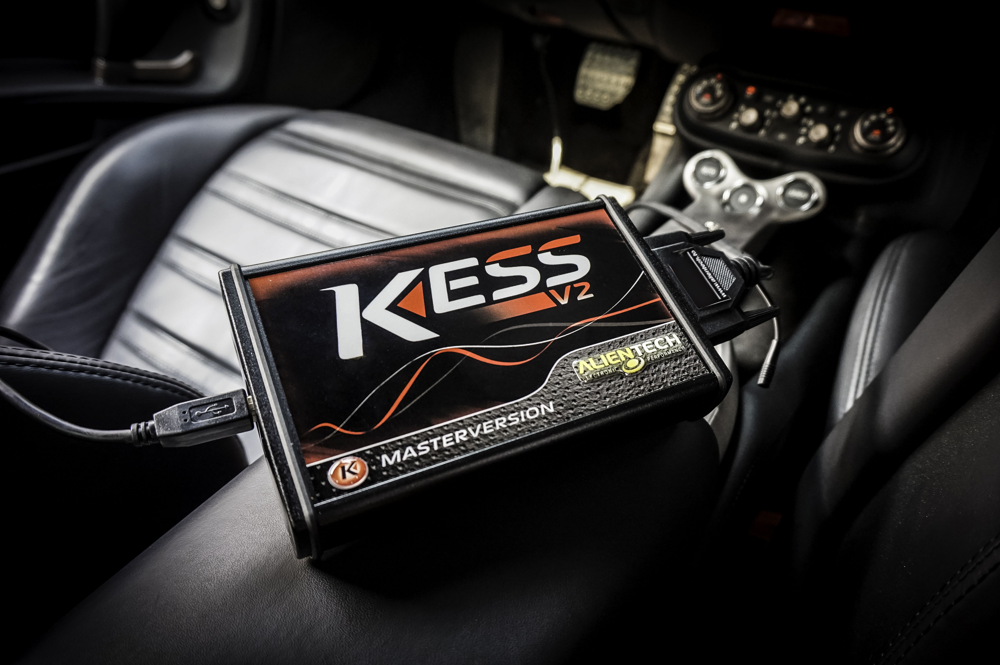

KESS V2
- Le Kess V2 Edition Master est la version vous autorisant un accès complet aux fichiers des différents calculateurs.
- Une fois que vous avez fait la lecture du fichier et que vous l’avez modifié (à l’aide d’ECM Titanium) , Kess V2 vous donnera la possibilité de réinjecter le fichier modifié dans le calculateur.

- Cet outil est utilisé pour les reprogrammations moteur pour obtenir un gain de performance considérable selon la préparation et le moteur.